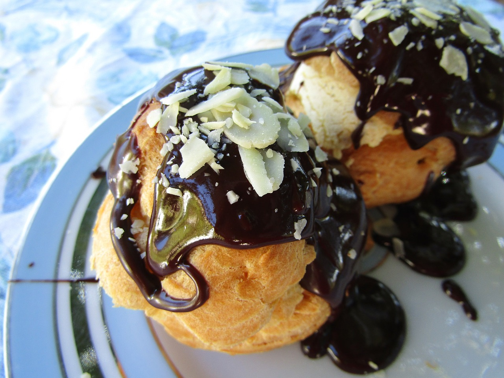

French Pastries
in Hazelnut Grove, UT
French pastries are famous for their beautiful appearance and amazing taste. Each pastry is a luxurious treat. Whether you are eating a crisp, flaky croissant for breakfast, a macaron as a snack to help get you through the day, or a glass of mousse as a treat after a hard day's work, you can be assured that your treat of choice will be delectable and fresh when you get it from our bakery.
At Good Taste, we believe that each and every one of our patrons deserves the best in quality, taste, presentation, and experience. We take pride in the authenticity of our French pastries and bread and in ensuring that each of our products looks spectacular and tastes wonderful.
If you have a moment to relax and enjoy your purchase, take a moment to sit inside and enjoy our bakery's atmosphere or visit our outdoor dining area.
You can get the full experience of visiting a French Patisserie at our bakery in Hazelnut Grove, UT or order online for your convenience.

Macarons
A Variety of Flavors
With a crisp exterior, chewy interior, smooth filling, and a punch of flavor, each of our irresistible macarons is sure to delight your tastebuds.

Pâte à Choux
Eclairs, Profiteroles, Cream Puffs, Chouquettes, Paris-Brests, and Religieuses
Our choux pastries' light, crisp exteriors and soft, creamy fillings create exquisite and engaging combinations of texture and flavor.

Viennoiseries
Croissants, Pain au Chocolat, Palmiers, and Kouign-amann
Buttery dough baked to perfection results in delicate interior layers encapsulated with a flaky, crisp exterior.

Tartes
Full-size and Indiviual Tarts
Whether you are looking for a strong, fruity dessert or a sweet, creamy option, our French tarts are sure to satisfy your craving.

Gateaux
Opera Cakes, Madeleines, Financiers, Canneles, and Pound Cakes
Our cakes, both large and small, boast moist, flavorful interiors with expertly decorated and equally delectable exteriors.

Patisseries Iconiques
Mousse, Millefeuilles, Flans, and Petits-fours
Our iconic French pastries are gorgeous and taste divine. Treat yourself to an authentic experience, after all, you deserve the best.

Pain
Baguettes and Brioches
Airy, sweet, buttery brioches and enticing baguettes with their crisp outer shells and light, chewy interiors are a must-have experience for any culinary connoisseur.